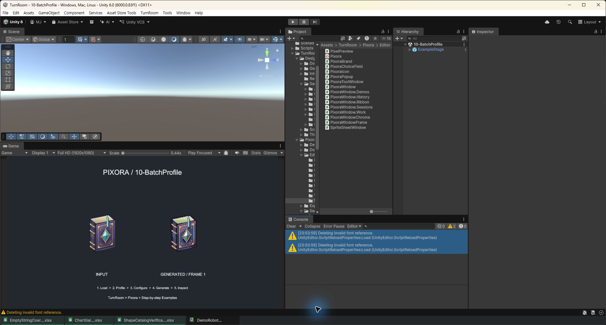

Tracefolio REPORTS & ISSUES
Tracefolio REPORTS & ISSUESPixora 이력 키 입력의 사용 중단 API 교체
검증 대기실제 Unity 6000.0.83f1 재컴파일 후 경로 오류 24개와 C# 경고 2개가 재발하지 않았습니다. Unity 내부 글꼴 경고 2개는 남아 있습니다.
작업 결과
소스 수정과 실제 Unity 재컴파일·도메인 재로딩을 수행했습니다. 콘솔 오류 0개, 경고 2개를 관찰했습니다.
변경 내용
적용 내용
HistoryKey의 PreventDefault를 FocusController.IgnoreEvent로 교체하고 StopImmediatePropagation을 유지했습니다. Unity 6000.0 공식 API 문서를 확인했습니다.
검증
dotnet build Tools/Verification/Verification.csproj --no-restore 성공. 이 프로젝트는 일부 경고를 억제하므로 별도로 실제 Unity Ctrl+R 재컴파일을 확인했습니다. Unity Tundra build success 6.04초, Pixora.Editor.dll 및 DesignDataTable.Editor.dll 갱신과 Mono 재로딩 성공. 재로딩 로그에서 경로 오류와 CS0618/CS0414가 재발하지 않았습니다. 실제 콘솔 화면에서 오류 0개, 글꼴 경고 2개 확인.

남은 사항
Deleting invalid font reference 2개는 미해결입니다. 전체 스택은 Unity 내부 TextSettings.InitializeFontReferenceLookup → EditorTextSettings.CreateDefaultEditorFontAsset → ScriptReloadProperties.Load이며 프로젝트 호출 프레임이나 대상 글꼴 이름은 없습니다. 프로젝트 에셋의 m_FontReferences 검색 결과가 없어 프로젝트 원인으로 단정하지 않았습니다. 경고 숨김이나 사용자 설정 삭제는 수행하지 않았습니다. 실제 키보드 Undo/Redo 회귀 확인은 미실행입니다. 캡처는 가공 없이 원본 PNG를 보존했습니다. 교훈 검토: 변경 없음 — 기존 증거 우선 지침으로 포괄되며 Unity 버전별 상세는 이 보고서에 남깁니다.
작업 시간
- 제안 시간: 3~10분
- 실제로 완료된 시간: 시작 2026-10-31 23:49:47 KST. 소스 수정과 Unity 확인 23:54 KST. 보고서 작성 시각 2026-10-31 23:55:33 +09:00; 공개 검증은 별도 진행.
- XERJ: 실패 — Status: node not running. Search 시 서버 기동 실패: data/node.lock 사용 중. 다른 프로세스 잠금을 삭제하지 않고 rg 및 현재 소스로 대조했습니다.